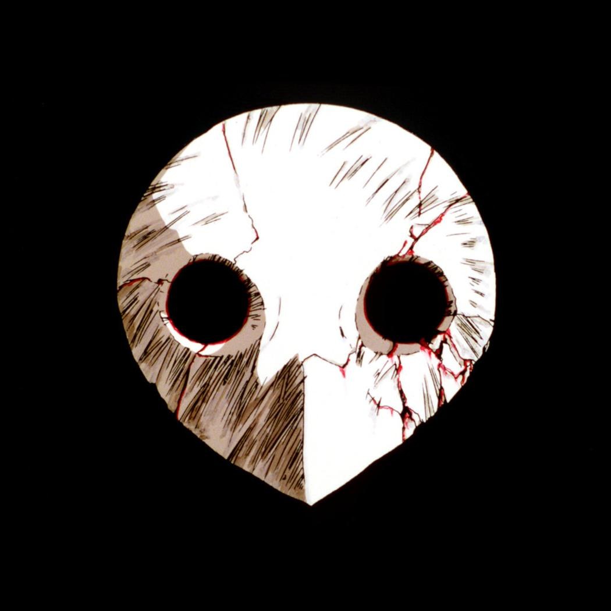

About Me
Bienvenue! Je suis Kodjo Henoc DOGBE, étudiant en développement d'applications à l'Esag-NDE. J'associe ma passion pour le code à mes connaissances en sciences végétales pour créer des solutions innovantes qui connectent la technologie à la nature.
Education
Licence fondamentale en Biologie et Physiologie Végétale - Université de Lomé
Étudiant en Développement d'Applications - Esag-NDE
Projects
Weather App
A mobile application that provides real-time weather forecasts using Flutter.
Plant Database
A database system that catalogues plant species, offering search and categorization features for researchers.